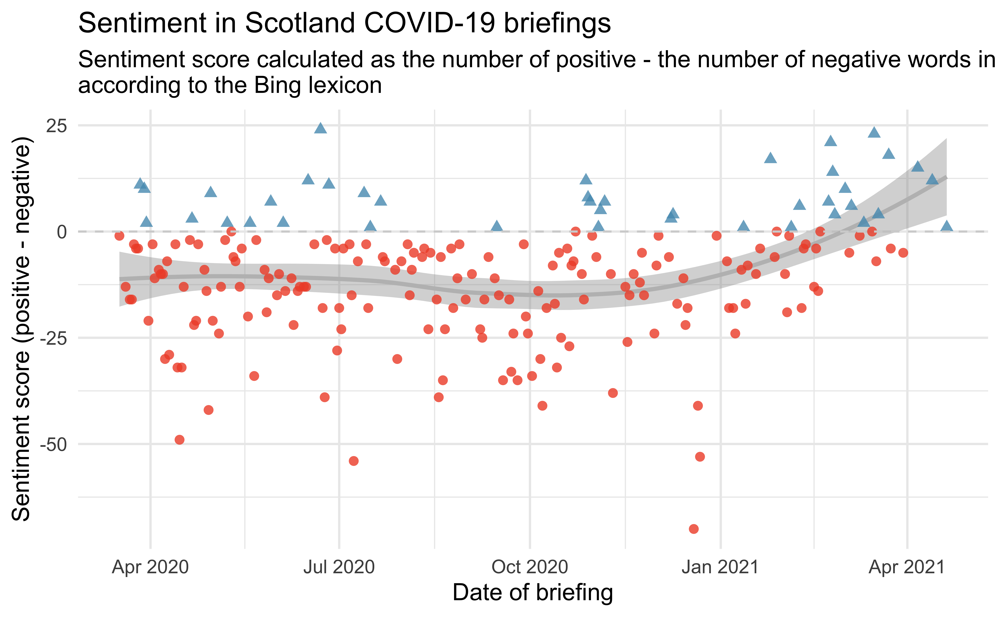
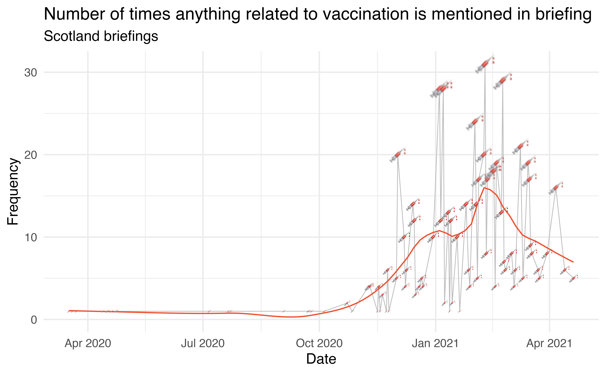
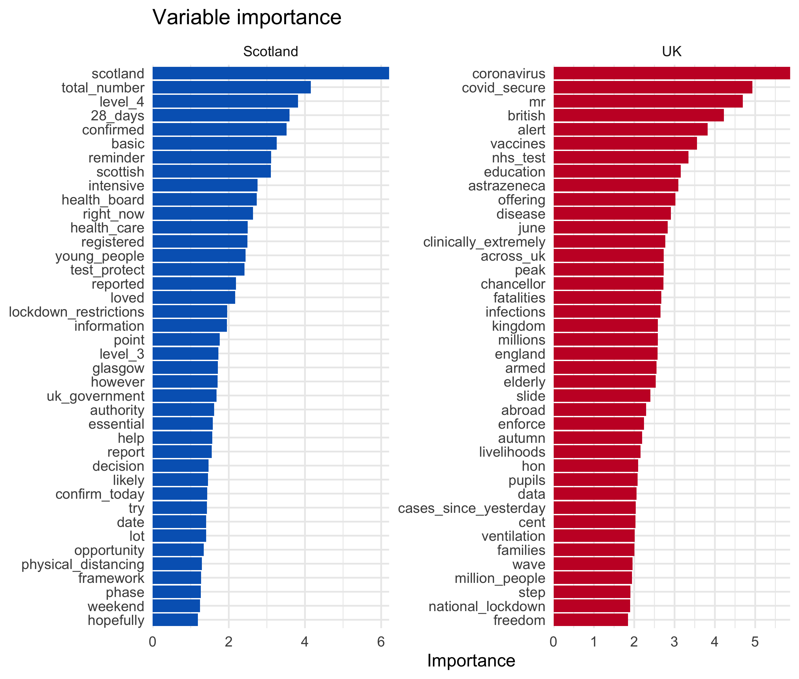
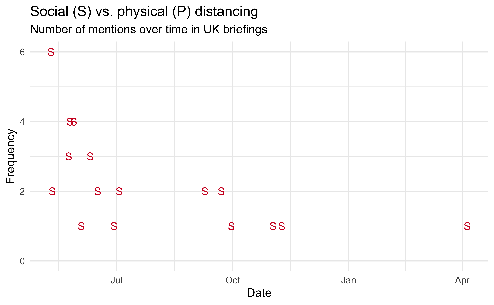

Highlights
Sentiment over time
For this plot I calculated the sentiment score of each briefing as the number of words associated with a positive sentiment minus the number of words associated with a negative sentiment. Plotting sentiment scores over time shows a steady trend in the negative earlier on in the pandemic, with an upward trend towards positive since March 2021.

Code for creating this figure can be found here. Some notes on the code:
- I like using
shapeto distinguish groups along withcolourby mapping the same variable to both aesthetics. - Using custom colours is a low effort/high return way of making your plots unique, for just two colours
scale_colour_manual()is the simplest way to achieve this.
Early on in the sentiment analysis it was clear that the sentiment assignments didn’t work perfectly in this setting. For example, the word “positive” actually carries a negative sentiment in the COVID context, but it’s assigned a positive sentiment in the Bing lexicon. I dropped that word from the sentiment analysis, though I realize there are a few others like it that I didn’t catch/correct for.
Vaccines FTW!
This figure shows the number of times anything related to vaccinations shows up in the Scotland briefings. It occurred to me today that it’s a “jab” not a “vaccine” here so I used [Vv]accin|\\b[Jj]abs?\\b as the regular expression string to try to catch all relevant mentions.

Code for creating this figure can be found here. Some notes on the code:
- With new advancements in graphics it’s pretty straightforward to create plots that use emojis to represent data with just ggplot2. Whether this is a great use of emojis, I’m not so sure…
- For this figure to show up in R Markdown, I used
dev = "ragg_png"as a code chunk option.
Still waiting for pubs…
The other thing everyone is talking about nowadays is pubs. Unfortunately, so far, mentions of pubs has been more frequently related to outbreaks than happy news.

Code for creating this figure can be found here. Some notes on the code:
- Originally my gray lines covered part of the beer mug. My first instict was to shift the beer mugs (that is,
goem_text()) up in the y direction. But then I realized I can have the mugs cover the lines simply by switching their order since ggplot2 plots the layers in order. expand_limits()might be my new favourite function. Well, it’s not new, but new to me, somehow… It allows you to ensure a single value is included in the limits without having to worry about whether it would be included or not automatically. If included, ggplot2 doesn’t change anything. If not, it extends the limit to that value.
Scotland vs. UK speeches
The following figure shows the tf-idf (term frequency - inverse document frequency) scores of words in Scotland and UK speeches. Some of the words that show up more in Scotland briefings and much fewer (or no) times in UK briefings are geographic areas in Scotland, which makes sense. Nicole Sturgeon also regularly qualifies statistics she reports (e.g. positive cases, deaths, etc.) with the phrase “by that measurement”, and that’s probably why the word “measurement” shows up on the Scotland side. Some differences are harder to explain. Except “slides”, they say “next slide please” a lot in the UK briefings! Nicola Sturgeon doesn’t use slides, so none of that up here.
 registered, Glasgow, suspected, Aberdeen, usual, measurement, issues, Lanarkshire, Clyde, either, Lothian, presiding, decrease, relation, reminder. Words with high tf-idf for UK speeches are (in decreasing order) slide, speaker, adjusting, fatalities, doctors, kingdom, alas, roadmap, mechanical, gov.uk, Merseyside, Mancherter's, mayor, amazing, department")
Code for creating this figure can be found here. One note on the code: The blue used in the Scotland plot is the blue from the Scottish flag and the red in the UK plot is the red from the UK flag. Again, this is a point about using custom colours, and in this case, contextual colours.
Text classification models
This case study was a great motivator for me to learn more about tidymodels and also text modeling. I am hugely grateful for the fantastic tidymodels learning resources as well as this tidy text modeling tutorial by Julia Silge and Emil Hvitfeldt. The details of the model building are can be found here but I’ll show one figure summarizing the results in this post – the variable importance figure.
These are text features that have high importance in the classification model. Some of them match findings from the tf-idf plot above, but in the model I also used bigrams and trigrams, so you see some phrases as well as single words as well. “Physical distancing” shows up on the Scotland side, which makes sense based on the social vs. physical distancing finding from earlier. I can almost hear in my head Nicola Sturgeon talking about losing a “loved” one, I think she uses this phrasing in every briefing, so that word also makes sense to me. On the UK side, we have “slide” again, which makes me think I should have removed all the “next slide please” sentences. There is also “livelihoods” and upon closer inspection of the texts I think this is due to phrases like “we are engaged in a constant struggle to protect lives and livelihoods” being more common in the UK briefings than in the Scotland briefings. If what you know about Scotland is limited to Braveheart, the word “freedom” showing up on the UK side might surprise you. Both countries’ briefings mention “freedom”, but it shows up a lot more often in the UK briefings, within sentences like “and i must stress that it is only because of months of sacrifice and effort that we can take this small step to freedom today.”.

Code for creating this figure can be found here.
Social vs. physical distancing
Earlier in the pandemic Nicola Sturgeon used the phrase “social distancing”, then it looks like she experimented with “physical distancing” at the beginning of the summer, and has been using that phrase exclusively ever since.
Code for creating this figure can be found here.
Meanwhile, down in 10 Downing Street, it’s still “social distancing”… These data come from the UK government website.

Code for creating this figure can be found here.
One note on the code: In order capture “social distance” and “social distancing” (and their “physical” variants), I used
social dist|physical distas the regular expression to match on.1